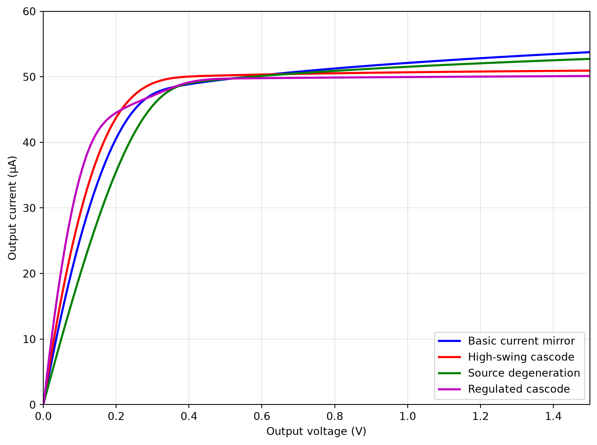
Analog (Integrated) Circuit Design
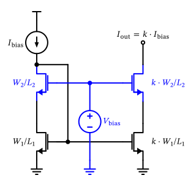
Figure 47: A cascoded current mirror using a biasing voltage to set the cascode gate potential.
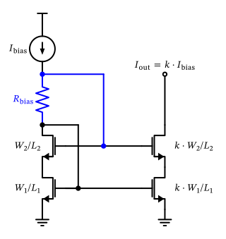
Figure 48: A high-swing cascoded current mirror.
\[ r_\mathrm{out} = r_\mathrm{ds,casc} + r_\mathrm{ds} \cdot (1 + g_\mathrm{m,casc} \cdot r_\mathrm{ds,casc}). \tag{37}\]
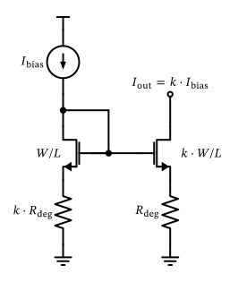
Figure 49: A current mirror with resistive degeneration.
\[ r_\mathrm{out} = r_\mathrm{ds} + R_\mathrm{deg} \cdot (1 + g_\mathrm{m}\cdot r_\mathrm{ds}). \tag{38}\]
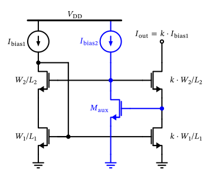
Figure 50: A regulated-cascode current mirror.
\[ \begin{split} r_\mathrm{out} &= r_\mathrm{ds,casc} + r_\mathrm{ds} \cdot [1 + g_\mathrm{m,casc} \cdot r_\mathrm{ds,casc} \cdot (1 + g_\mathrm{maux} / g_\mathrm{dsaux})] \\ & \approx r_\mathrm{ds} \cdot g_\mathrm{m,casc} \cdot r_\mathrm{ds,casc} \cdot g_\mathrm{m,aux} \cdot r_\mathrm{ds,aux} \end{split} \tag{39}\]
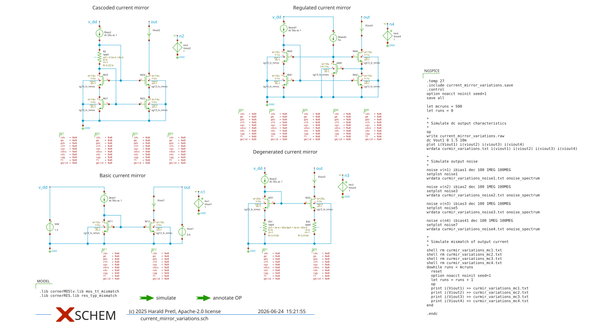
Figure 51: Simulation schematic of the improved current mirrors.
| Structure | \(r_\mathrm{out}\) at \(V_\mathrm{out} = 0.5\,\text{V}\) | at \(1.0\,\text{V}\) | at \(1.5\,\text{V}\) |
|---|---|---|---|
| Basic current mirror | \(150\,\text{k}\Omega\) | \(260\,\text{k}\Omega\) | \(360\,\text{k}\Omega\) |
| High-swing cascode | \(720\,\text{k}\Omega\) | \(1.5\,\text{M}\Omega\) | \(2.4\,\text{M}\Omega\) |
| Source degeneration | \(200\,\text{k}\Omega\) | \(350\,\text{k}\Omega\) | \(490\,\text{k}\Omega\) |
| Regulated cascode | \(710\,\text{k}\Omega\) | \(2.8\,\text{M}\Omega\) | \(3.7\,\text{M}\Omega\) |

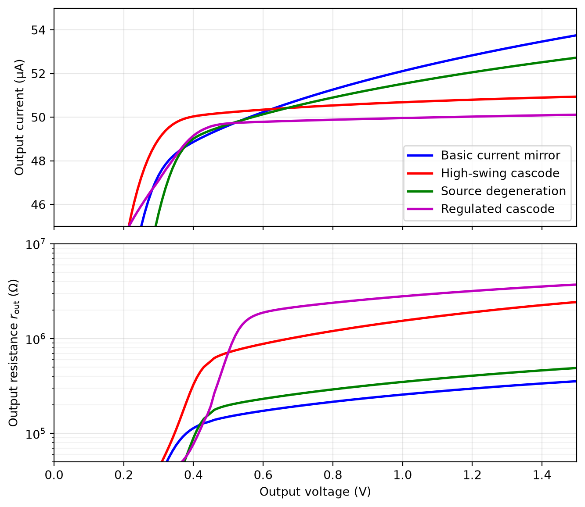
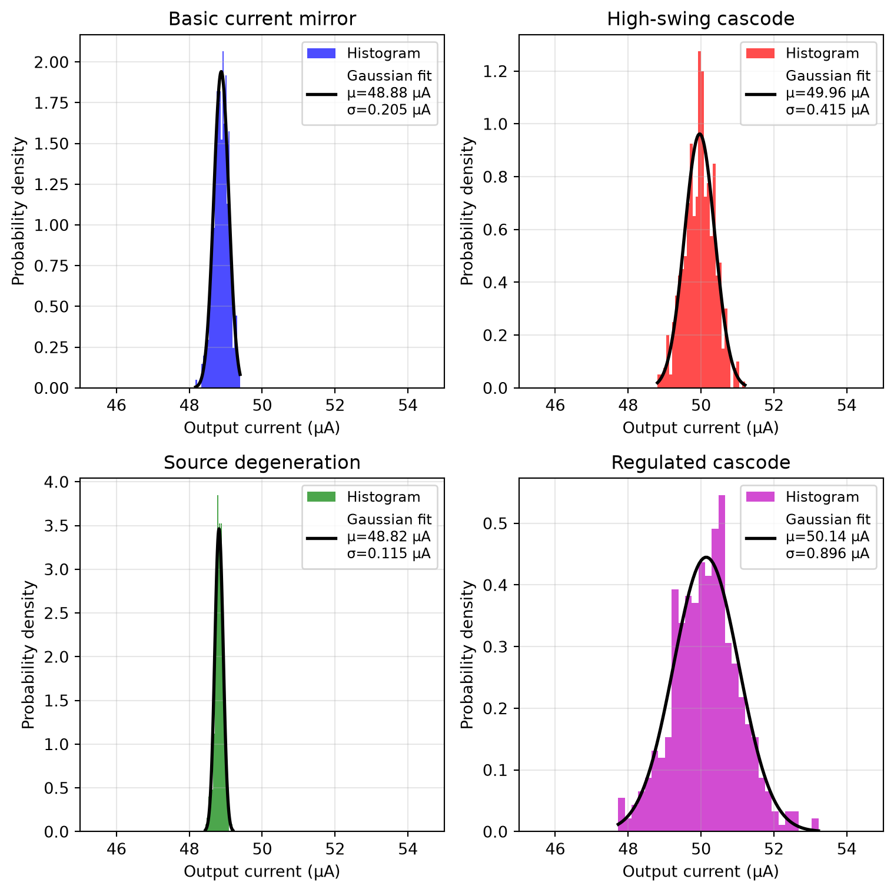
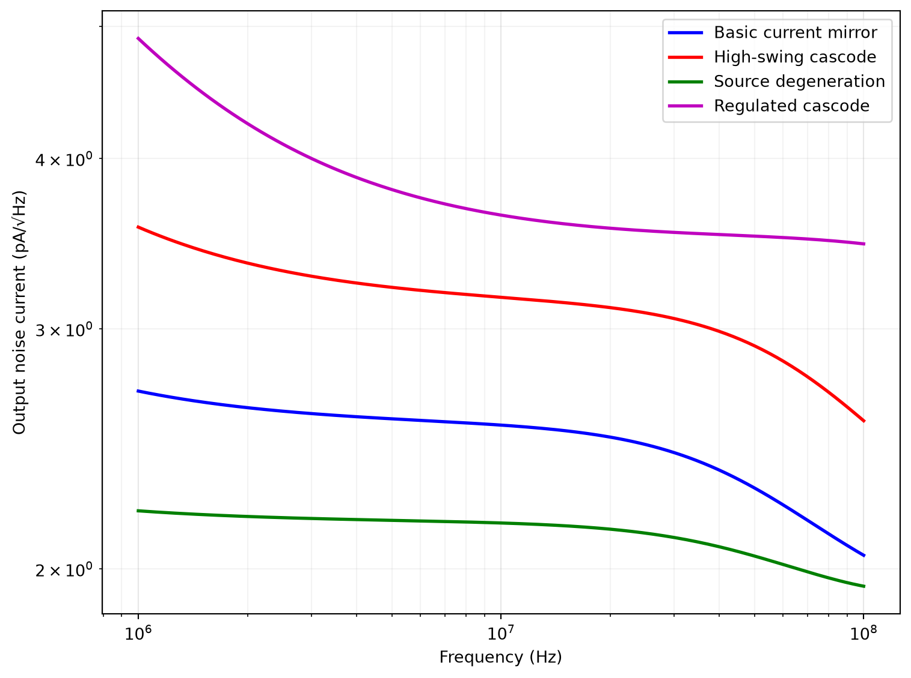
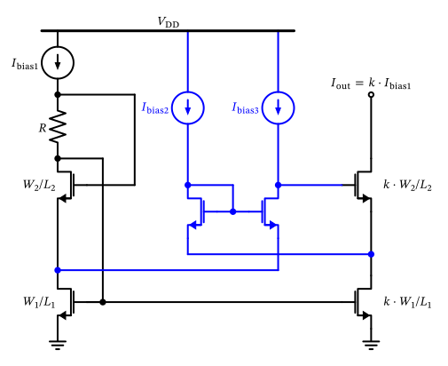
Figure 56: A low-voltage regulated-cascode current mirror.
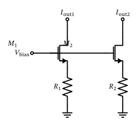
Figure 57: A current mirror pair with resistive degeneration.
\[ \begin{split} \sigma^2\left\{\frac{\Delta I_\mathrm{D}}{I_\mathrm{D}}\right\} & = \frac{\sigma^2\left\{\Delta V_\mathrm{th}\right\}}{(V_\mathrm{drv} + V_\mathrm{deg})^2} + \left( \frac{V_\mathrm{drv}}{V_\mathrm{drv} + V_\mathrm{deg}} \right)^2 \cdot \sigma^2\left\{\frac{\Delta K}{K}\right\} \\ & + \left( \frac{V_\mathrm{deg}}{V_\mathrm{drv} + V_\mathrm{deg}} \right)^2 \cdot \sigma^2\left\{\frac{\Delta R}{R}\right\}. \end{split} \tag{40}\]
\[ \begin{split} \sigma^2\left\{\frac{\Delta I_\mathrm{D}}{I_\mathrm{D}}\right\} & = \frac{\sigma^2\left\{\Delta V_\mathrm{th}\right\}}{[(g_\mathrm{m}/I_\mathrm{D})^{-1} + V_\mathrm{deg}]^2} + \left( \frac{1}{1 + V_\mathrm{deg}\cdot g_\mathrm{m}/I_\mathrm{D}} \right)^2 \cdot \sigma^2\left\{\frac{\Delta K}{K}\right\} \\ & + \left( \frac{V_\mathrm{deg} \cdot g_\mathrm{m}/I_\mathrm{D}}{1 + V_\mathrm{deg} \cdot g_\mathrm{m}/I_\mathrm{D}} \right)^2 \cdot \sigma^2\left\{\frac{\Delta R}{R}\right\}. \end{split} \tag{41}\]
\[ \sigma^2\left\{\frac{\Delta K}{K}\right\} = \sigma^2\left\{\Delta W\right\} \cdot \frac{1}{W^2} + \sigma^2\left\{\Delta L\right\} \cdot \frac{1}{L^2} + A_\mu^2 \cdot \frac{1}{W L}, \tag{42}\]
| Component | Matching Parameter | Value |
|---|---|---|
Resistor rsil |
\(\sigma\left\{\Delta R / R\right\} \cdot \sqrt{WL}\) | 1.2 % µm |
Resistor rppd |
\(\sigma\left\{\Delta R / R\right\} \cdot \sqrt{WL}\) | 1.5 % µm |
Resistor rhigh |
\(\sigma\left\{\Delta R / R\right\} \cdot \sqrt{WL}\) | 5 % µm |
MIM cap_cmim |
\(\sigma\left\{\Delta C / C\right\} \cdot \sqrt{WL}\) | 1 % µm (estimated) |
MOSFET sg13_lv_nmos |
\(\sigma\left\{\Delta V_\mathrm{th}\right\} \cdot \sqrt{WL}\) | 3.9 mV µm |
MOSFET sg13_lv_nmos |
\(\sigma\left\{\Delta W\right\}\) | 4 nm |
MOSFET sg13_lv_nmos |
\(\sigma\left\{\Delta L\right\}\) | 2 nm |
MOSFET sg13_lv_nmos |
\(\sigma\left\{\Delta \mu/\mu\right\} \cdot \sqrt{WL}\) | 0.5 % µm |
MOSFET sg13_lv_pmos |
\(\sigma\left\{\Delta V_\mathrm{th}\right\} \cdot \sqrt{WL}\) | 2.2 mV µm |
MOSFET sg13_lv_pmos |
\(\sigma\left\{\Delta W\right\}\) | 4 nm |
MOSFET sg13_lv_pmos |
\(\sigma\left\{\Delta L\right\}\) | 2 nm |
MOSFET sg13_lv_pmos |
\(\sigma\left\{\Delta \mu/\mu\right\} \cdot \sqrt{WL}\) | 0.33 % µm |
\[ \sigma^2\left\{\frac{\Delta I_\mathrm{D}}{I_\mathrm{D}}\right\} = \sigma^2\left\{\Delta V_\mathrm{th}\right\} \left( \frac{g_\mathrm{m}}{I_\mathrm{D}} \right)^2 + \sigma^2\left\{\frac{\Delta K}{K}\right\} \tag{43}\]
\[ \sigma^2\left\{\frac{\Delta I_\mathrm{D}}{I_\mathrm{D}}\right\} = \sigma^2\left\{\frac{\Delta R}{R}\right\} \tag{44}\]
Current Mirror Matching Calculation
Let us now calculate the current mirror matching of the simple current mirror. Using Equation 43, and using the sizing values of \(g_\mathrm{m}/ I_\mathrm{D}= 5\,\text{V}^{-1}\), \(W = 10\,\mu\text{m}\), and \(L = 5\,\mu\text{m}\), we can calculate the standard deviation of the transconductance parameter mismatch using Equation 42 and Table 4: \[ \sigma\left\{\frac{\Delta K}{K}\right\} = \sqrt{ \left( \frac{4\,\text{nm}}{10\,\mu\text{m}} \right)^2 + \left( \frac{2\,\text{nm}}{5\,\mu\text{m}} \right)^2 + \left( \frac{0.5\,\%\mu\text{m}}{\sqrt{10\,\mu\text{m} \cdot 5\,\mu\text{m}}} \right)^2 } = 0.09\,\%. \]
The standard deviation of the threshold voltage mismatch can be calculated using Equation 28 and Table 4: \[ \sigma\left\{\Delta V_\mathrm{th}\right\} = \frac{3.9\,\text{mV}\mu\text{m}}{\sqrt{10\,\mu\text{m} \cdot 5\,\mu\text{m}}} = 0.55\,\text{mV}. \]
Current Mirror Matching Calculation
Bringing both results into Equation 43, we get \[ \sigma\left\{\frac{\Delta I_\mathrm{D}}{I_\mathrm{D}}\right\} = \sqrt{ (0.55\,\text{mV} \cdot 5\,\text{V}^{-1})^2 + (0.09\,\%)^2} \approx 0.29\,\%. \] Comparing with the simulation results in Figure 54 for the basic current mirror, we can see that this gives a reasonable estimate compared to the standard deviation of about \(0.21\,\mu\text{A}/48.9\,\mu\text{A} = 0.43\,\%\) obtained from the Monte-Carlo simulation. The remaining discrepancy is due to simplifications in the analytical model (e.g., the square-law approximation).
Current Mirror Matching Calculation
Let us now calculate the current mirror matching of the resistively-degenerated current mirror. We can use Equation 41 to analyze this configuration. We use the sizing values of \(g_\mathrm{m}/ I_\mathrm{D}= 10\,\text{V}^{-1}\), \(W = 20\,\mu\text{m}\), and \(L = 3\,\mu\text{m}\), for the MOSFET, and \(V_\mathrm{deg} = 0.2\,\text{V}\), and \(W = 3\,\mu\text{m}\) / \(L = 45\,\mu\text{m}\) for the used rppd resistor (which at \(R_\square = 260\,\Omega\) gives the required \(R_\mathrm{deg} \approx 3.9\,\text{k}\Omega\)).
The standard deviation of the transconductance parameter mismatch can be calculated as \[ \sigma\left\{\frac{\Delta K}{K}\right\} = \sqrt{ \left( \frac{4\,\text{nm}}{20\,\mu\text{m}} \right)^2 + \left( \frac{2\,\text{nm}}{3\,\mu\text{m}} \right)^2 + \left( \frac{0.5\,\%\mu\text{m}}{\sqrt{20\,\mu\text{m} \cdot 3\,\mu\text{m}}} \right)^2 } = 0.09\,\%. \]
The standard deviation of the threshold voltage mismatch can be calculated as \[ \sigma\left\{\Delta V_\mathrm{th}\right\} = \frac{3.9\,\text{mV}\mu\text{m}}{\sqrt{20\,\mu\text{m} \cdot 3\,\mu\text{m}}} = 0.50\,\text{mV}. \]
Current Mirror Matching Calculation
The standard deviation of the resistor mismatch can be calculated using Equation 32 and Table 4: \[ \sigma\left\{\frac{\Delta R}{R}\right\} = \frac{1.5\,\%\mu\text{m}}{\sqrt{3\,\mu\text{m} \cdot 45\,\mu\text{m}}} = 0.13\,\%. \]
Plugging these results into Equation 41, we get \[ \begin{split} \sigma^2\left\{\frac{\Delta I_\mathrm{D}}{I_\mathrm{D}}\right\} =& \underbrace{\left( \frac{0.50\,\text{mV}}{0.1\,\text{V} + 0.2\,\text{V}} \right)^2}_{(0.17\,\%)^2} + \underbrace{\left( \frac{1}{1 + 0.2\,\text{V} \cdot 10\,\text{V}^{-1}} \cdot 0.09\,\% \right)^2}_{(0.03\,\%)^2} \\ & + \underbrace{\left( \frac{0.2\,\text{V} \cdot 10\,\text{V}^{-1}}{1 + 0.2\,\text{V} \cdot 10\,\text{V}^{-1}} \cdot 0.13\,\%\right)^2}_{(0.09\,\%)^2} \\ =& (0.19\,\%)^2. \end{split} \]
Current Mirror Matching Calculation
The three terms are worth reading individually. The degeneration has done its job on the MOSFET: the dominant threshold-voltage term is down to \(0.17\,\%\) and the transconductance-parameter term to a negligible \(0.03\,\%\), while the resistor contributes only \(0.09\,\%\). The total of \(0.19\,\%\) is a clear improvement over the \(0.29\,\%\) of the basic current mirror, and it matches the Monte-Carlo result in Figure 54 of about \(0.12\,\mu\text{A}/48.8\,\mu\text{A} = 0.24\,\%\) reasonably well.
Current Mirror Matching Calculation
The essential lesson of source degeneration is that it does not remove mismatch, it trades MOSFET mismatch for resistor mismatch — so the trade only pays off if the resistor is given enough area.
Current Mirror Matching Calculation
That is exactly why \(R_\mathrm{deg}\) is laid out here as a long, comparatively wide device (\(3 \times 45\,\mu\text{m}^2\)) instead of the minimum-width strip that would deliver the same \(3.9\,\text{k}\Omega\): a \(W = 1\,\mu\text{m}\) / \(L = 15\,\mu\text{m}\) resistor has the same resistance but nine times less area, which would raise its mismatch contribution from \(0.09\,\%\) to \(0.26\,\%\) and push the total back to \(0.31\,\%\) — no better than the basic mirror. Resistor area, not resistor value, is what buys the matching here.